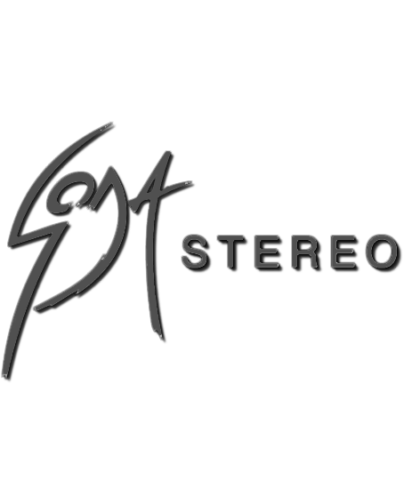

Banda de rock argentina, formada en Buenos Aires en el año 1982 por Gustavo Cerati (voz, guitarra), Héctor «Zeta» Bosio (bajo) y Carlos Alberto Ficicchia «Charly Alberti» (batería), considerada una de las más influyentes e importantes bandas iberoamericanas de todos los tiempos y una leyenda de la música latina. La banda tuvo un papel muy importante en el desarrollo y la difusión del rock iberoamericano durante las décadas de 1980 y 1990. Fueron el primer grupo de habla hispana en conseguir un éxito masivo en Latinoamérica. Soda Stereo ha encabezado las listas de todos los tiempos en su nativa Argentina, donde se establecieron varios récords de ventas de discos y asistencias a conciertos.
En 1997 se disolvió por problemas personales y por diferencias de criterios artísticos entre sus integrantes, realizando una corta y emotiva gira de despedida terminada el 20 de septiembre de 1997 en el estadio de River Plate, conocido como El último concierto. A mediados de 2007 la banda anunció su regreso para realizar una única gira continental llamada Me Verás Volver en la que reunió a más de un millón de seguidores, rompiendo varios récords de asistencia y número de conciertos.